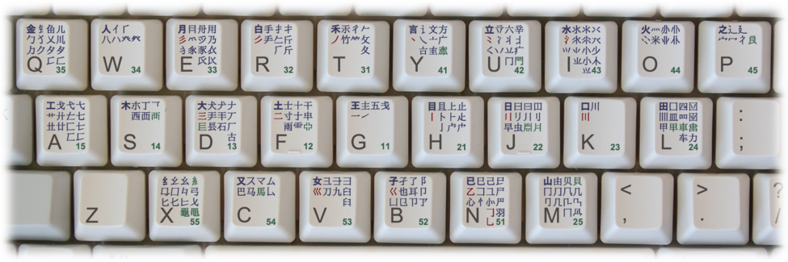

Wubi font input method(五笔输入法), referred to as Wubi(五笔) or Wangma(王码）, is a Chinese character input method.
Also, Wubi is a font-code input method that encodes Chinese characters completely according to strokes and font features.
It is understood that Wubi font input method invented by in August 1983 when Chinese input method began to appear. The wubi input method is mainly used in mainland China where Simplified Chinese is used. In the past, because Full Pinyin input method had a large amount of codes and the design of keyboard was not suitable for Chinese input, Wubi input method was more efficient and scientific. However, with the rise of the smart pinyin input method and the difficulty of getting started with the Wubi input method, the number of users of the Wubi input method has gradually decreased.
There are three schemes for Wubi,namely, the 86 version, the 98 version, and the new century version.
Since the 86 version was published relatively early, many people have already mastered the root arrangement of the 86 version, so it is difficult to accept the Wubi radical arrangement of the 98 version or the new century version. Therefore it's the version with the most people in use now. However, the 86 version is more difficult to learn, and the layout is not as scientific as the other versions.

Version 98 is an improved solution, launched in 1998, its coding is more scientific, easier to learn and use. Simultaneously 98 editions have relatively improved the situation of special case characters, can correctly distinguish its left and right, up and down, outer and inner factors when making this type of input, but this problem has not been fundamentally resolved.

The New Century Edition was launched on January 28, 2008. The new century version is the most scientific, convenient and practical among the current versions. The difficulty of getting started is also slightly reduced. For those who write Chinese characters according to the standard stroke order, it is convenient to take codes and enter them. In addition, Wubi of the new century version has reduced the frequency of actual recoding.
If you want to get started now, it is recommended to learn the most scientific new century version of Wubi directly.
Take the Wangma Wubi input method as an example, to input "中 (Pinyin: zhong)", just press the "K" key; to input "文 (Pinyin: wen)", just press the "Y" key. So to input "Chinese", we only need to input "YL" in Wubi, unlike Pinyin where we need to input "ZHONGWEN" or "VSWF".
By using the Wangma Wubi input method, we can find that the first-level brevity code characters of this input method are easy to input. For example, to input "中", you only need to press the "K" key, because "中" is a first-level brevity code word of the "K" key. And to input "Chinese input method（中文输入法）", you only need to press three keys "K", "Y" and "L". If you are familiar with the root formulas, you can input them quickly.
Let's try!